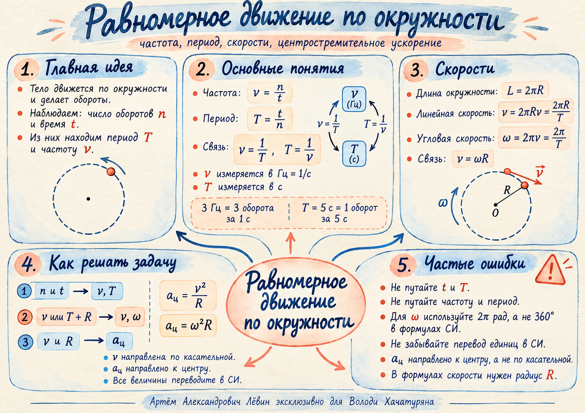

Частота — обороты за единицу времени
ν = n / t
Единица — герц: 1 Гц = 1 с−1. Например, ν = 3 Гц означает 3 оборота за 1 секунду.
Смысл: чем больше ν, тем больше оборотов тело успевает сделать за секунду.
Занятие · кинематика
Главная идея занятия: сначала связать число оборотов со временем через период и частоту, затем перевести эту связь в линейную скорость, угловую скорость и центростремительное ускорение.
За время t тело совершает n оборотов. Из этих двух величин сразу получаются частота и период.
Единица — герц: 1 Гц = 1 с−1. Например, ν = 3 Гц означает 3 оборота за 1 секунду.
Единица — секунда. Например, T = 5 с означает: один полный оборот длится 5 секунд.
За один оборот тело проходит длину окружности 2πR и поворачивается на угол 2π радиан.
Эта скорость показывает, какой путь вдоль окружности проходит тело за единицу времени.
Один полный оборот равен 2π радиан. Поэтому угловая скорость показывает, как быстро меняется угол поворота.
Именно изменение направления скорости означает наличие ускорения при равномерном движении по окружности.
Направлена по касательной к окружности в текущей точке.
Всегда направлено к центру окружности.
Сначала приведите данные к СИ, затем найдите ν или T, после чего переходите к нужной скорости или ускорению.
Записывайте исходную формулу, преобразование, подстановку и единицы.
Тело совершило 60 оборотов за 30 с. Найдите частоту и период вращения.
Период вращения равен 0,25 с. Найдите частоту.
Частота вращения равна 5 Гц. Сколько оборотов совершит тело за 12 с?
Тело совершает 180 оборотов за 1,5 минуты по окружности радиуса 0,20 м. Найдите частоту и линейную скорость.
Радиус окружности равен 0,30 м, период вращения 0,40 с. Найдите линейную скорость.
Частота вращения равна 3 Гц. Найдите угловую скорость.
Период вращения равен 0,50 с. Найдите угловую скорость.
Точка движется по окружности радиуса 0,40 м с угловой скоростью 5 рад/с. Найдите линейную скорость.
Тело движется по окружности радиуса 2 м со скоростью 8 м/с. Найдите центростремительное ускорение.
За 50 с тело совершило 150 оборотов по окружности радиуса 0,25 м. Найдите ν, T, ω, v и aц.
| № | Ответ |
|---|---|
| 1 | ν = 2 Гц; T = 0,5 с. |
| 2 | ν = 4 Гц. |
| 3 | n = 60 оборотов. |
| 4 | ν = 2 Гц; v = 0,8π м/с ≈ 2,51 м/с. |
| 5 | v = 1,5π м/с ≈ 4,71 м/с. |
| 6 | ω = 6π рад/с ≈ 18,85 рад/с. |
| 7 | ω = 4π рад/с ≈ 12,57 рад/с. |
| 8 | v = 2 м/с. |
| 9 | aц = 32 м/с². |
| 10 | ν = 3 Гц; T = 1/3 с ≈ 0,33 с; ω = 6π рад/с ≈ 18,85 рад/с; v = 1,5π м/с ≈ 4,71 м/с; aц = 9π² м/с² ≈ 88,83 м/с². |
